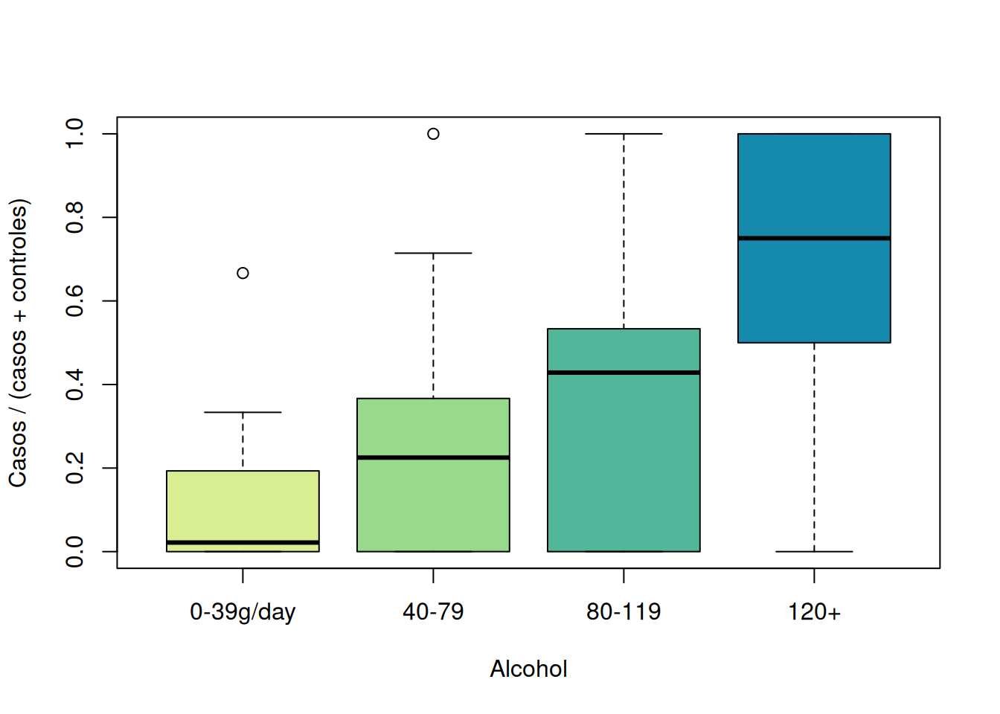
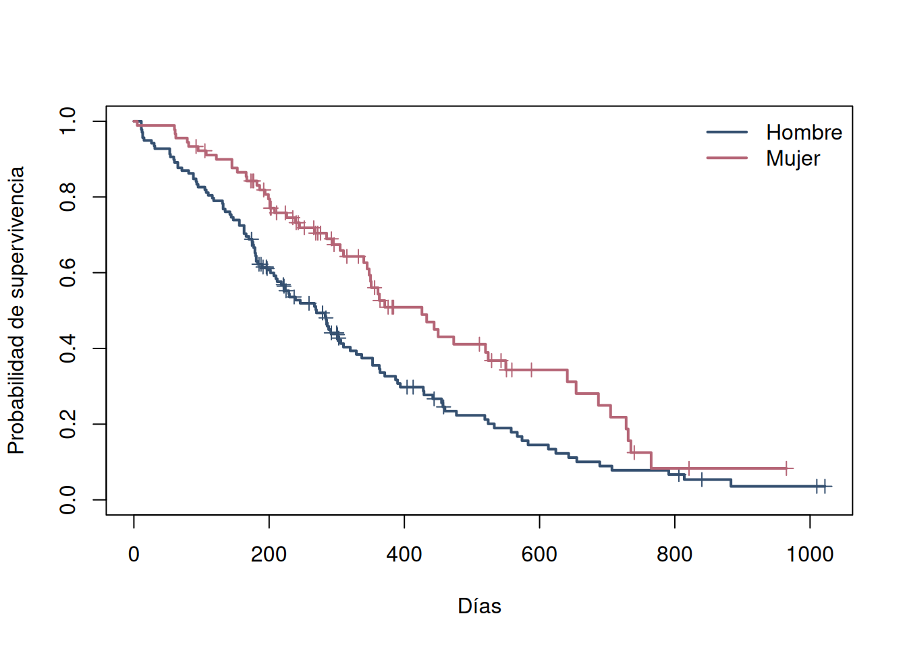
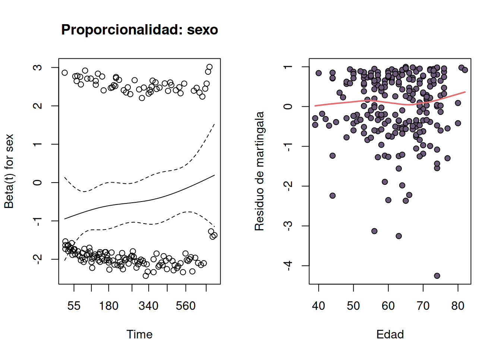

d <- datasets::esoph
d[c("agegp", "alcgp", "tobgp")] <-
lapply(d[c("agegp", "alcgp", "tobgp")], factor, ordered = FALSE)
stopifnot(nrow(d) == 88L, !anyNA(d),
all(d$ncases >= 0), all(d$ncontrols >= 0),
all(d$ncases + d$ncontrols > 0))
c(filas = nrow(d), casos = sum(d$ncases), controles = sum(d$ncontrols))
#> filas casos controles
#> 88 200 775
xtabs(cbind(casos = ncases, controles = ncontrols) ~ alcgp, d)
#>
#> alcgp casos controles
#> 0-39g/day 29 386
#> 40-79 75 280
#> 80-119 51 87
#> 120+ 45 22
xtabs(ncases ~ alcgp + tobgp, d)
#> tobgp
#> alcgp 0-9g/day 10-19 20-29 30+
#> 0-39g/day 9 10 5 5
#> 40-79 34 17 15 9
#> 80-119 19 19 6 7
#> 120+ 16 12 7 1010 Diseños epidemiológicos y tiempo hasta evento
Frecuencia, asociación y supervivencia reproducible
La epidemiología compara estados de salud, exposiciones y tiempos. Una tabla o modelo no identifica por sí solo el diseño: importan cómo entraron las unidades, cuándo se midió la exposición, quién podía convertirse en caso y cuánto tiempo estuvo bajo observación (Woodward 2014; Lash et al. 2021).
10.1 Pregunta, diseño y estimando
Antes de analizar, escriba una frase con población, exposición o intervención, comparador, desenlace y horizonte. Después identifique el mecanismo de selección y el estimando. Esta secuencia evita calcular una medida que el diseño no puede identificar.
| Diseño | Selección y temporalidad | Estimandos naturales | Riesgo principal |
|---|---|---|---|
| Transversal | estado y exposición en un corte | prevalencia, razón o diferencia de prevalencias | temporalidad ambigua |
| Cohorte | libres o en riesgo, seguidos desde exposición | incidencia acumulada, tasa, RD, RR, razón de tasas | pérdidas y exposición cambiante |
| Caso-control | casos por desenlace y controles de la población fuente | OR de exposición | control que no representa la fuente |
| Ensayo | intervención asignada y seguimiento prospectivo | efecto ITT: RD, RR, diferencia media o tiempo | incumplimiento, pérdidas, desenmascaramiento |
| Cuasi-experimento | intervención sin aleatorización, con comparación temporal o externa | cambio atribuible bajo supuestos del diseño | tendencias o eventos concurrentes |
El diseño transversal estima carga existente, no incidencia sin información de tiempo. Una cohorte establece exposición antes del evento. En caso-control se muestrea según el desenlace: la proporción de casos está fijada por diseño y no estima riesgo poblacional; el odds ratio sí puede estimar el OR de la población fuente bajo selección válida. Ensayos y cuasi-experimentos se desarrollan en el capítulo anterior (Hulley et al. 2013).
10.2 Medidas de frecuencia y efecto
Para \(N\) personas observadas en un momento, la prevalencia es \(P=C/N\). En una cohorte cerrada inicialmente libre del evento, el riesgo o incidencia acumulada es \(I=E/N_0\). Si los seguimientos difieren, la tasa de incidencia usa persona-tiempo:
\[ IR=\frac{E}{\sum_i T_i}. \]
Una persona aporta tiempo mientras está en riesgo. Una tasa tiene unidades (eventos por persona-año); no es una probabilidad. Para expuestos (\(1\)) y no expuestos (\(0\)):
\[ RD=I_1-I_0,\qquad RR=\frac{I_1}{I_0},\qquad IRR=\frac{IR_1}{IR_0}. \]
La diferencia de riesgos expresa casos adicionales o evitados y apoya decisiones absolutas. RR e IRR son relativos y deben acompañarse por riesgos o tasas base. En una tabla \(2\times2\) con casos expuestos \(a\), controles expuestos \(b\), casos no expuestos \(c\) y controles no expuestos \(d\),
\[ OR=\frac{a/c}{b/d}=\frac{ad}{bc}. \]
El OR no es el RR. Se aproxima a este cuando el evento es raro y la selección es compatible; con eventos frecuentes puede parecer mucho más extremo. Tampoco se puede obtener RD de un caso-control convencional sin información externa del riesgo basal.
10.3 Flujo reproducible y auditoría
Un análisis defendible deja rastro de ocho decisiones:
- Formular pregunta, diseño, población fuente y estimando.
- Identificar unidad, elegibilidad, origen de datos y diccionario.
- Auditar duplicados, rangos, faltantes, denominadores y cronología.
- Explorar conteos y distribuciones preservando estratos y tiempo.
- Estimar magnitud e incertidumbre en una escala interpretable.
- Diagnosticar la forma del modelo y observaciones influyentes.
- Evaluar sensibilidad a codificación, ajuste, faltantes y supuestos.
- Interpretar alcance, sesgos y relevancia, no solo valores \(p\).
10.4 Aplicación 1: caso-control agregado con esoph
10.4.1 Pregunta, diseño y alcance
datasets::esoph contiene 88 estratos de un estudio caso-control sobre cáncer esofágico en Ille-et-Vilaine, Francia. Registra casos y controles por edad, consumo de alcohol y tabaco. La pregunta es cómo cambian los odds de ser caso entre categorías de consumo, ajustando por edad y por el otro consumo. El estimando es un OR condicional al conjunto de estratos; no es prevalencia, riesgo ni efecto causal garantizado.
10.4.2 Importación, auditoría y exploración
Los 200 casos y 775 controles no son una muestra transversal de 975 personas: su cociente depende del muestreo de casos y controles. Las celdas con cero son información válida, pero celdas pequeñas pueden producir residuos grandes e intervalos amplios.
p_muestral <- with(d, ncases / (ncases + ncontrols))
cols <- c("#d9ed92", "#99d98c", "#52b69a", "#168aad")
boxplot(split(p_muestral, d$alcgp), col = cols,
xlab = "Alcohol", ylab = "Casos / (casos + controles)")
10.4.3 Estimación e incertidumbre
La regresión binomial para conteos agrupados modela los odds de caso dentro de cada celda. Las categorías menores son referencias.
fit_esoph <- glm(cbind(ncases, ncontrols) ~ agegp + alcgp + tobgp,
family = binomial, data = d)
ci_esoph <- confint.default(fit_esoph)
or_esoph <- exp(cbind(OR = coef(fit_esoph), ci_esoph))
round(or_esoph[grep("^(alcgp|tobgp)", rownames(or_esoph)), ], 2)
#> OR 2.5 % 97.5 %
#> alcgp40-79 4.20 2.57 6.85
#> alcgp80-119 7.25 4.15 12.66
#> alcgp120+ 36.70 17.26 78.06
#> tobgp10-19 1.55 0.99 2.42
#> tobgp20-29 1.67 0.98 2.85
#> tobgp30+ 5.16 2.63 10.13Ajustados por edad y tabaco, los odds aumentan de forma marcada con alcohol: frente a 0–39 g/día, el OR estimado es aproximadamente 4.20 para 40–79, 7.25 para 80–119 y 36.70 para 120+ g/día. Para tabaco 30+ frente a 0–9 g/día, el OR ajustado es cerca de 5.16. Los intervalos cuantifican imprecisión y son especialmente amplios en categorías con poca información. Estas asociaciones no son riesgos absolutos y pueden reflejar confusión residual, clasificación y selección de controles.
10.4.4 Diagnóstico y sensibilidad
dispersion <- c(deviance = deviance(fit_esoph),
df = df.residual(fit_esoph),
ratio = deviance(fit_esoph) / df.residual(fit_esoph))
dispersion
#> deviance df ratio
#> 82.33687 76.00000 1.08338
diag_esoph <- transform(d,
pearson = residuals(fit_esoph, type = "pearson"),
cook = cooks.distance(fit_esoph))
diag_esoph[order(-abs(diag_esoph$pearson)),
c("agegp", "alcgp", "tobgp", "ncases", "ncontrols",
"pearson", "cook")][1:5, ]
#> agegp alcgp tobgp ncases ncontrols pearson cook
#> 13 25-34 120+ 10-19 1 0 4.167211 0.09772045
#> 17 35-44 0-39g/day 10-19 1 13 2.135526 0.01259810
#> 50 55-64 0-39g/day 30+ 4 2 2.070156 0.08740520
#> 21 35-44 40-79 10-19 3 20 1.951522 0.07701442
#> 28 35-44 120+ 0-9g/day 2 1 1.925160 0.04025067
fit_esoph_quasi <- update(fit_esoph, family = quasibinomial)
c(binomial_SE = coef(summary(fit_esoph))["alcgp120+", "Std. Error"],
quasi_SE = coef(summary(fit_esoph_quasi))["alcgp120+", "Std. Error"])
#> binomial_SE quasi_SE
#> 0.3850381 0.4109124Una razón devianza/grados de libertad cercana a 1 apoya, sin demostrar, la variación binomial. Los residuos localizan celdas que el patrón aditivo describe mal; Cook mide influencia sobre el ajuste, no error de registro. La sensibilidad cuasibinomial ensancha errores si existe sobredispersión. También conviene probar una interacción alcohol-tabaco solo si fue planteada y hay información por celda, sin seleccionar el relato por significancia.
10.5 Aplicación 2: tiempo hasta evento con survival::lung
10.5.1 Censura y estimando
survival::lung sigue 228 pacientes con cáncer pulmonar avanzado. time son días; status = 2 indica muerte y status = 1, censura. Una observación censurada informa que el evento no ocurrió hasta su último tiempo conocido, no que la persona sobrevivió para siempre. Kaplan-Meier estima \(S(t)=P(T>t)\) bajo censura no informativa condicional al diseño (Kleinbaum y Klein 2012; Therneau 2024).
Esto es supervivencia de individuos hasta un evento clínico, distinta de la supervivencia demográfica usada en modelos poblacionales: allí puede estimarse probabilidad de permanecer vivo y disponible entre censos, a menudo confundida con emigración o detección. Ni Kaplan-Meier ni Cox corrigen automáticamente esos procesos ecológicos (Williams et al. 2002).
10.5.2 Auditoría y Kaplan-Meier
lung <- survival::lung
lung$event <- lung$status == 2
lung$sex <- factor(lung$sex, levels = 1:2,
labels = c("Hombre", "Mujer"))
stopifnot(nrow(lung) == 228L, all(lung$time > 0),
all(lung$status %in% 1:2))
c(personas = nrow(lung), eventos = sum(lung$event),
censuras = sum(!lung$event))
#> personas eventos censuras
#> 228 165 63
colSums(is.na(lung))
#> inst time status age sex ph.ecog ph.karno pat.karno
#> 1 0 0 0 0 1 1 3
#> meal.cal wt.loss event
#> 47 14 0La auditoría muestra faltantes en covariables, pero no en tiempo, estado, edad o sexo usados aquí. Borrar filas por variables que no entran al modelo cambiaría innecesariamente la población analítica.
km_sex <- survival::survfit(survival::Surv(time, event) ~ sex, data = lung)
plot(km_sex, col = c("#355070", "#b56576"), lwd = 2, mark.time = TRUE,
xlab = "Días", ylab = "Probabilidad de supervivencia",
conf.int = FALSE)
legend("topright", levels(lung$sex), col = c("#355070", "#b56576"),
lwd = 2, bty = "n")
km_sex
#> Call: survfit(formula = survival::Surv(time, event) ~ sex, data = lung)
#>
#> n events median 0.95LCL 0.95UCL
#> sex=Hombre 138 112 270 212 310
#> sex=Mujer 90 53 426 348 550La mediana estimada es 270 días para hombres y 426 para mujeres, con intervalos de 95 % de 212–310 y 348–550 días, respectivamente. A 365 días, la supervivencia estimada es aproximadamente 0.34 y 0.53. Son descripciones de estos pacientes y su mecanismo de seguimiento, no tasas de supervivencia de toda la población.
10.5.3 Cox, diagnóstico y sensibilidad
El modelo de Cox compara tasas instantáneas mediante hazard ratios (HR) sin especificar el riesgo basal. Un HR no es un RR acumulado ni una diferencia en días de vida.
fit_cox <- survival::coxph(survival::Surv(time, event) ~ age + sex,
data = lung, x = TRUE)
round(exp(cbind(HR = coef(fit_cox), confint(fit_cox))), 3)
#> HR 2.5 % 97.5 %
#> age 1.017 0.999 1.036
#> sexMujer 0.599 0.431 0.831
diagnostico_ph <- survival::cox.zph(fit_cox)
diagnostico_ph
#> chisq df p
#> age 0.209 1 0.65
#> sex 2.608 1 0.11
#> GLOBAL 2.771 2 0.25A edad igual, el HR de mujeres frente a hombres es cerca de 0.60 (IC 95 % 0.43–0.83): su tasa instantánea estimada es 40 % menor. El HR por año de edad es 1.017 (IC 95 % aproximadamente 0.999–1.036), una diferencia pequeña e incierta por año. Esto no demuestra un efecto biológico del sexo: el estudio no asignó sexo y puede haber confusión por estado clínico o tratamiento.
cox.zph() evalúa asociación entre residuos de Schoenfeld y tiempo. Aquí no ofrece evidencia fuerte contra riesgos proporcionales, pero con 165 eventos no puede certificar el supuesto. Deben graficarse los residuos y considerar una interacción con tiempo si el patrón es sistemático.
op <- par(mfrow = c(1, 2))
plot(diagnostico_ph, var = "sex", resid = TRUE,
main = "Proporcionalidad: sexo")
mart <- residuals(fit_cox, type = "martingale")
plot(lung$age, mart, pch = 21, bg = "#6d597a",
xlab = "Edad", ylab = "Residuo de martingala")
lines(lowess(lung$age, mart), col = "#e56b6f", lwd = 2)
par(op)
cc_ecog <- complete.cases(lung[c("time", "event", "age", "sex", "ph.ecog")])
fit_cox_misma_muestra <- survival::coxph(
survival::Surv(time, event) ~ age + sex, data = lung[cc_ecog, ])
fit_cox_ecog <- survival::coxph(
survival::Surv(time, event) ~ age + sex + ph.ecog, data = lung[cc_ecog, ])
c(n = sum(cc_ecog),
HR_sexo_basico = exp(coef(fit_cox_misma_muestra)["sexMujer"]),
HR_sexo_ECOG = exp(coef(fit_cox_ecog)["sexMujer"]))
#> n HR_sexo_basico.sexMujer HR_sexo_ECOG.sexMujer
#> 227.0000000 0.6031530 0.5754446La curva suavizada revisa si edad necesita otra forma funcional. Añadir ECOG es una sensibilidad a estado funcional. Los dos modelos se ajustan sobre las mismas 227 filas para no confundir el cambio por ajuste con el debido a excluir una observación; el HR de sexo cambia aproximadamente de 0.60 a 0.58. Esto no elimina confusión por variables no registradas.
10.6 Ejercicios y actividad
- Clasifique cinco preguntas propias como transversal, cohorte, caso-control, ensayo o cuasi-experimento. Para cada una escriba población, comparador, horizonte y estimando.
- Construya una tabla \(2\times2\) con riesgos 0.20 y 0.10 en 100 personas por grupo. Calcule RD, RR y OR; explique por qué responden preguntas distintas.
- En
esoph, ajuste interacciónalcgp * tobgp, revise celdas y compare OR e intervalos con el modelo aditivo. ¿La complejidad está respaldada por datos? - Extraiga de
km_sexsupervivencia e intervalos a 180 y 365 días. Comunique diferencia absoluta por sexo sin convertirla en causal. - Repita Cox en el subconjunto completo para
ph.ecog, comparando primero el modelo básico en esa misma muestra. Separe cambio por ajuste de cambio por exclusión de filas.
Actividad integradora. Entregue una página reproducible sobre uno de los dos datos. Debe contener pregunta/diseño/estimando, auditoría, una exploración, estimación con intervalo, diagnóstico, sensibilidad y una conclusión de tres frases: magnitud, incertidumbre y límites. Una lista de valores \(p\) no constituye análisis de resultados.
10.7 Síntesis
- El mecanismo de selección determina qué frecuencia o efecto puede estimarse.
- Prevalencia, riesgo, tasa, RD, RR, IRR y OR no son intercambiables.
- Persona-tiempo resuelve seguimientos desiguales; no convierte una tasa en riesgo.
- Censura aporta seguimiento parcial y requiere un supuesto sobre su mecanismo.
- Kaplan-Meier describe \(S(t)\); Cox estima HR bajo proporcionalidad y forma funcional adecuada.
- Diagnóstico y sensibilidad delimitan la conclusión; no reparan selección, confusión ni mala definición del estimando.